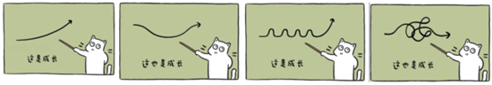
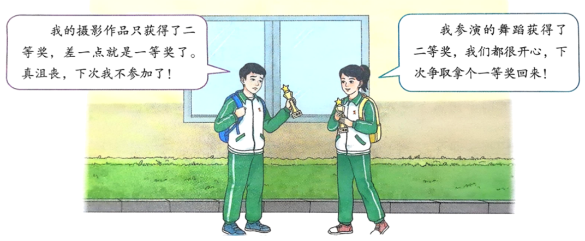
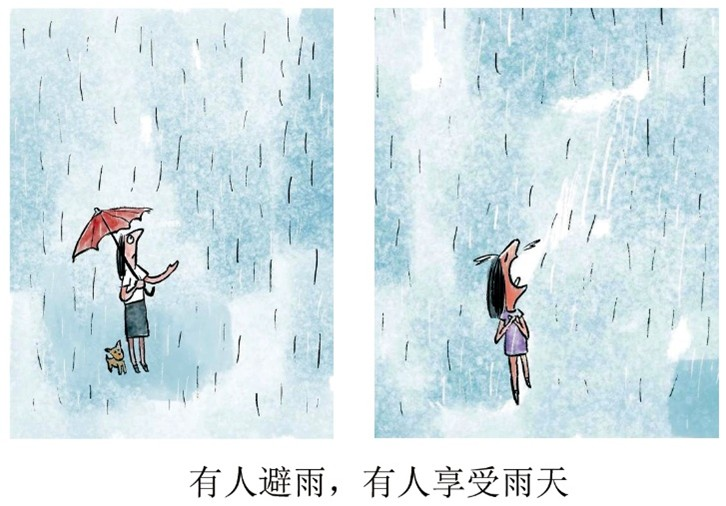
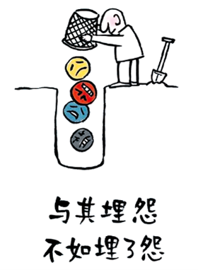

请根据以下材料作文题目，填写您的审题思路与拟题方案
本问卷包含22道材料作文题目，请仔细阅读每道题目，并在下方文本框中填写您的审题思考、拟题方案或写作思路。您的回答将帮助我们了解作文教学的现状。
此问卷使用GitHub Issues作为数据存储后台。所有提交的回答将自动创建为GitHub Issues，只有仓库所有者（您）可以在GitHub上查看所有提交结果。
点击这里配置GitHub API信息
如果你错失了清晨的露珠，
不妨欣赏夜晚的星光；
倘若没赶上夏天的荷花，
何不期待冬季的寒梅。
以上材料引发了你哪些思考？请你结合自身的生活体验和感悟，写一篇文章，或记述经历，或讲述故事。
近年来，国产游戏和动画佳作频出，其中的经典语句意味深长。
"踏上取经路，比抵达灵山更重要。"------《黑神话：悟空》采访手记
"我命由我不由天。"------《哪吒之魔童降世》哪吒台词
在主角们与命运搏斗的故事里，我们能收获面对生活的勇气。以上两句话引发了你怎样的联想和思考？请选择其中一句或两句，结合你的生活经历，自拟题目，撰写一篇不少于600字的文章。

读完漫画，你有怎样的联想和思考？请写一篇文章。可以讲述经历或见闻，可以发表观点展开论述，可以进行文学创作。
守住自己的内心，守住自己的生活，就是在守住不惑的底线，守护人生的大盘。
即使不知道答案，即使不清楚前路，仍可选择做最值得的自己：去思考、去行动，去迎接、去探索。------《南方周末》新年献词《守住不惑的底线，选择做最值得的自己》
上述材料引发了你哪些联想与思考？请你选择某一个角度写一篇文章。

（摘自七年级上册《道德与法治》第90页）
以上图文引起了你怎样的联想和思考？你可以叙述经历或阐述观点或发挥想象，选好角度，写一篇文章。
"若是月亮还没来，路灯也可照窗台，照着白色的山茶花微微开......"最近，《若月亮没来》这首歌火了，不仅因为旋律上头，也因为歌词很治愈，唱进了无数普通人的心里。歌词中的"月亮"代表什么，每个人有不同的理解。倘若它迟迟没有出现，我们该怎么办？
针对以上内容，你有怎样的体验和思考？你可以记述经历，可讲述故事，也可发表看法。
材料一：君子求诸己，小人求诸人。------《论语》
材料二：其实地上本没有路，走的人多了，也便成了路。------《故乡》
材料三：门外依然是一片黝黑/黎明没有到来/那惊醒他的/是他自己对于黎明的/过于殷切的想望。------《吹号者》
请根据你对其中一则材料的理解，结合自身的经历，写一篇记叙文。
"五分钟看完一部电影"
"能5分钟吃完的饭绝对不会多花1分钟"
"忍受不了无意义的对话和事情"
"如果人生也能开倍速就好了"
"大家好像都过着二倍速的生活，渐渐忘记了生活原本的节奏"
......
上面材料引发了你怎样的联想和思考？根据自己的经历和感悟，写一篇记叙性文章；
巴黎奥运会男子200米个人混合泳决赛，年届30的中国运动员汪顺比他三年前夺冠时慢了1秒钟，以1分56秒00的成绩获得一枚铜牌。赛后，采访汪顺时，他说：在这个项目上，我上一届是冠军，但不意味着一直都是冠军。我能够依然在这个赛场上继续前进，就是成功。
以上材料引发了你怎样的思考和感悟？请结合自己的体验和感受，联系现实生活写一篇文章。
梦想很轻，却因此拥有飞翔蓝天的力量。------屠呦呦
只要大方向是对的，不是死胡同，你只要坚持下去，就会达到光明的彼岸。------袁隆平
胜人者有力，自胜者强。------老子
结合上述材料，写一篇文章，谈谈你对梦想、努力、坚持、不屈......的体验和思考，就其中一点或记述经历。
自强不息的精神在个人修养、国家发展、历史进步等方面各有不同的表现。对于个人而言，自信自立，勤思苦学，勇于开拓，面对逆境不屈不挠，等等，都是自强不息的表现。
请你以"自强不息"为话题，根据你的体验和思考，或记述经历，或讲述故事，或发表看法。
高尔基说：劳动是一切欢乐和美好的源泉。世界上最美好的东西，都是由劳动、由人的聪明的双手创造出来的。每天我们都会看到很多忙碌的身影，他们用勤劳的双手、辛勤的劳动为社会提供良好的环境和服务，日复一日，年复一年。每一份平凡的工作背后，都是一种责任与坚守，每一个汗水中的微笑，都令人心生敬意。
请你以参加过的有益身心健康的劳动为素材；写一篇文章，或记述劳动经历，或讲述劳动故事，或议论劳动意义。
一朵野花
陈梦家
一朵野花在荒原里开了又落了，
不想到这小生命，向着太阳发笑，
上帝给他的聪敏他自己知道，
他的欢喜，他的诗，在风前轻摇。
在主题班会上，有同学说："青春就是一场追逐目标的赛跑，只有跑得快、跑得远，才算不辜负。"
也有同学说："青春不只是赛跑，有时需要停下来，感受沿途的风景，倾听内心的声音。"
请自选角度，自拟题目，写一篇文章。
歌曲《枕着光的她》中有一句词："幸福有时候不说话，总在平凡里发着芽。"幸福常常在平凡中默默生长，在那些看似微不足道的细节中悄然绽放。它可能是一杯清香的茶，是家人温馨的笑容，是朋友间的默契与陪伴，是内心的平静与满足......当我们用心去感受生活的每一个瞬间，去珍惜身边的每一个人、每一件事，幸福就会在我们的心中悄然发芽。
上面的材料引发了你怎样的联想、感触与思考？请结合你的经历和体验，自拟标题，写一篇记叙文。
哈佛图书馆墙上有一则训言：觉得为时已晚的时候，恰恰是最早的时候。
以上文字引发了你怎样的联想和思考？请写一篇记叙文或议论文。
要求：自拟标题，自选角度，确定立意；不要套作，不得抄袭；不得泄露个人信息，不少于600字。
节奏，是音乐的灵魂，或快或慢，或舒缓或急促。我们的生活也是如此，节奏无处不在，比如，有人赞赏"特种兵式"旅游，有人喜爱"沉浸式"漫步......在学习、生活中，如何找寻自己的节奏，把控自己的节奏，成了不少青少年面对的问题。
请结合以上材料写一篇议论文，展现你的感悟与思考。
有人说：人生的一大遗憾不是"我不行"，而是"我本可以""我也曾想过"。
这句话引发了你怎样的联想和思考？请写一篇文章。

要求：①结合自己的亲身经历或见闻，抒发真情实感。②叙述有中心，有条理，详略得当。③有生动细腻的描写，写人要写出特点。④综合运用各种表达方式。⑤书写工整，卷面整洁。
我国古代伟大的思想家、哲学家老子，在其著作《道德经》第二十二章中，有这样两句话："少则得，多则惑。"这两句话短小精妙，富含哲理，对于我们的学习、我们的生活，乃至我们的人生，都具有很大的指导意义。
请根据你阅读上述文段的感受、思考、联想、理解或领悟，写一篇文章。
要求：①自拟题目，在文段含义范围之内立意；②除诗歌外，体裁不限，文体特征鲜明；③不得抄袭或套作，不可使用本试卷中的内容；

探索世界，从一条路开始，只要你迈步，路就在你脚下延伸，美景将在无尽处。
请根据上述材料，联系你的经历和思考，写一篇不少于600字的作文。
正在提交，请稍候...